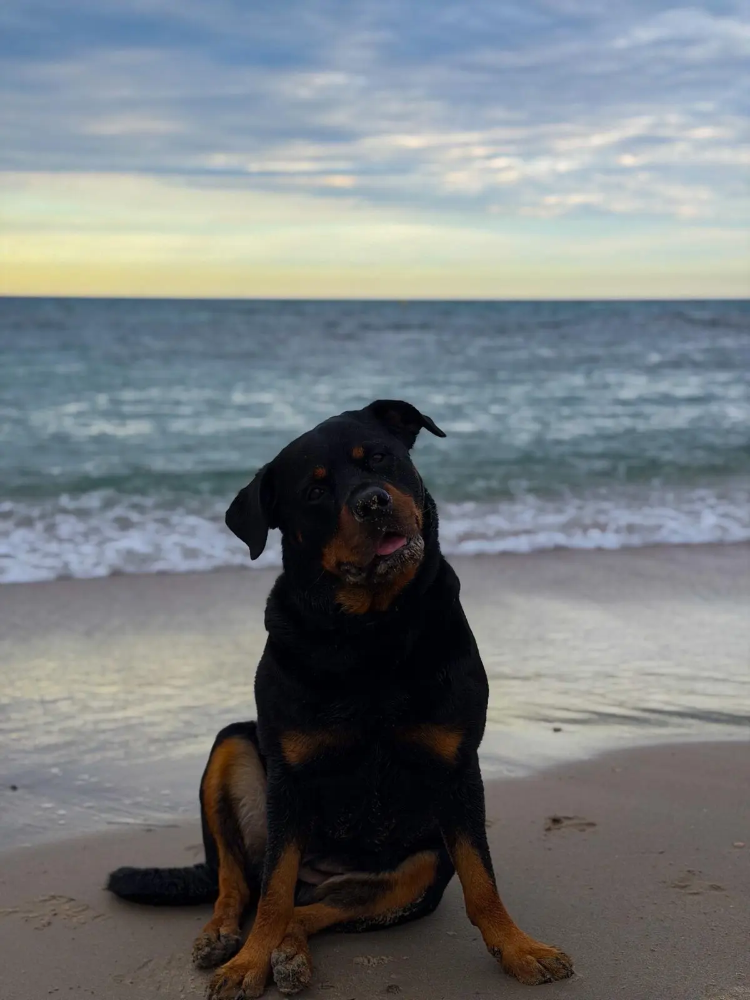

Cuando la gente ve a un Rottweiler por la calle, muchas veces cruza de acera. Es la realidad a la que se enfrentan miles de dueños de perros de razas consideradas PPP en España. Pero la verdad sobre estos perros es muy distinta a lo que dice su mala fama. Y Maya es la prueba viviente.
¿Quién es Maya?
Maya es una Rottweiler hembra de 5 años y 40 kilos que vive en la Región de Murcia. Cariñosa, obediente y con un carácter equilibrado, se ha convertido en un fenómeno en redes sociales con más de 17.000 seguidores en Instagram y millones de visualizaciones mensuales entre Instagram y TikTok.
Su misión es simple pero importante: demostrar que los Rottweiler, y los perros PPP en general, son ante todo familia.

El carácter real de un Rottweiler
Al contrario de lo que muchos piensan, el carácter del Rottweiler es afable y equilibrado. Son perros de gran inteligencia, muy leales y protectores con su familia. Su temperamento combina fuerza con docilidad, confiabilidad y una enorme disposición para el aprendizaje.
Como cualquier perro, su comportamiento depende fundamentalmente de la educación y la socialización que reciba. Un Rottweiler bien educado y bien socializado es un compañero ideal: tranquilo en casa, obediente en la calle y cariñoso con quienes ama.
"No hay perros malos, hay dueños que no se informan. Un Rottweiler bien criado es el perro más noble que puedas tener a tu lado."
¿Qué son los perros PPP en España?
Los perros potencialmente peligrosos (PPP) están regulados en España por la Ley 50/1999 y el Real Decreto 287/2002. La lista oficial incluye ocho razas: Pit Bull Terrier, Staffordshire Bull Terrier, American Staffordshire Terrier, Rottweiler, Dogo Argentino, Fila Brasileiro, Tosa Inu y Akita Inu.
Es importante entender que esta clasificación se basa en la raza y en características físicas, no en el comportamiento individual del animal. Por eso tantos defensores de estas razas reclaman que la responsabilidad recaiga en el dueño y no en el perro.
Requisitos para tener un Rottweiler en España
Si quieres tener un Rottweiler u otro perro PPP en España, necesitas cumplir varios requisitos legales: una licencia PPP, un certificado de capacidad física y psicológica, un seguro de responsabilidad civil con cobertura mínima de 120.000 euros, y el uso obligatorio de bozal y correa no extensible en la vía pública.
👉 Hemos preparado una guía completa con todos los requisitos para tener un Rottweiler en España en 2026, explicada paso a paso.

Rompiendo el estigma, un vídeo a la vez
Cada vídeo de Maya tiene un objetivo: mostrar la realidad de convivir con un Rottweiler. Desde cómo se comporta con otros perros, hasta los momentos tiernos del día a día, pasando por el humor de tener una perra PPP de 40 kilos con alma de peluche.
El resultado ha sido una comunidad fiel de amantes de los animales, especialmente dueños de razas incomprendidas que por fin se sienten representados. Porque detrás de cada Rottweiler hay una familia que sabe la verdad: son puro amor.